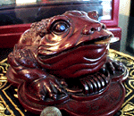
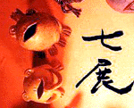

|
 銭くわえてカエル財運強化！【福岡発=なかのっちー様】福岡市早良区の中華料理店で昼御飯をゴチになったときのことです。レジスターのとなりに、すわっていたカエルは、堂々とした鼻がついて、くちには銭をくわえていました。また、よくみると、足の下にも銭を踏みしめ、なんだかとっても財運が強化されるカエルでした。
これからは年末宝くじの季節でもあるので、このカエルにあやかって、カエルに５００円玉をくわえてもらい、運を高めた硬貨で、くじを購入すると、１億円でも２億円でも当たりそうです！
逆オークションで母がカエル捜索！【福岡発たぬねこ様】ｙａｈｏｏのオークションで先日こんなものを探してました。将来のカエラーのお母さんらしいです（笑）http://page.auctions.yahoo.co.jp/jp/auction/26170064
カエラー情報で母子救え！【全国かえる奉賛会】さっそくでかけてみると母親からの痛切な訴えが書いてあった。『このカエルを探しています。娘のお気に入りでもーボロボロなんです。何個でもあるだけ欲しいのでどーか、よろしくお願いします。情報でもいいです。逆オークション！！誰かーこのカエルのぬいぐるみ ぜひ ぜひ！！』締切は１４日だそうだ。カエラーの英知を結集して母親を安心させようではないかああああああ。
ルビーのカエルも販売！【福岡発たぬねこ様】さらにｙａｈｏｏのオークションでルビーのカエルを販売していました。高級？でもエメラルドや緑石のほうがカエルらしくっていいなぁhttp://page.auctions.yahoo.co.jp/jp/auction/24542224
【全国かえる奉賛会】ザイール産で、『三本の光が交差して六方に光を放つスター効果が現れ透明の宝石以上の魅力もある』そうだ。『石の持つ力：何者にも屈さない・情熱を沸かせる・深い愛情に恵まれる・論争や議論、戦争においては敵を破る「お守り石」となる』ということなので、最前線で米英軍と戦うわが軍の小隊長などは所有していたほうがいいぞおおおおおおおおおお。ホームページもあるらしい。
 サンタがえる登場！「七展」【東京発いとう同志記者】カエルの陶芸家の境沢典子さんはじめ、太田曜子さん、勝田裕子さん、T.FUKUDAさん、荒川由樹子さん、清水敬子さん、ハヘロ（谷本礼史）さん達7人主催で行われる「七展」が表参道Gallery Kowaで開催されました。 境沢さんからの情報によると、今回は新作？「サンタがえる」が居たそうです。案内葉書の画像を添付致します（かんむり君とお祈りカエルが境沢さんの作品です）。
【全国かえる奉賛会】すまぬー。マシン不調で更新がおくれてしまい、事前紹介できなかったのが残念であるー。
カエルの手帳を求む！【日本発井伏カエル同志記者】毎年カエルの手帳(6穴)を購入し愛用していますが、今年はどこでもまだ見つかりません。ちなみに去年購入したのはG.C.Inc. International社の製品です。2001年のカエル手帳をどこで買えますか?12月に入ると焦ってきました.....是非情報の提供をお願いします!!!!!
【全国かえる奉賛会】そんな手帳があるなんて知らなかった。情報を入手したひとはおしえてくれー。大王もほしいぞ。
アンテナマスコットカエルも持ち主にカエル！【日本発kaeru_typeA同志記者】平成12年11月18日号に「カエルストラップで持ち主にカエル！！」という記事が掲載されていましたが、実は、私も同じ様な経験があるのです。私の携帯は、ストラップではなく、アンテナマスコットがカエルでした。 出張帰り、帰路のどこかで携帯電話を落としてしまいまして、慌てて自分が利用した交通機関に電話で問い合わせを致しました。バス会社の落とし物センターに電話したときです。 「あの〜今日の○時頃なんですが、携帯…」 『あ！！カエルの！？』 「そうです！！！」 カエルのおかげで会話１０秒で無事確保。皆様、携帯には是非！カエルグッズを！
【全国かえる奉賛会】ということなので、けろテン市場に行って、カエル携帯ストラップを購入して備品の紛失に備えようではないか！


カエルサボテン、カエルのモローストラップを同時発売！【ケロ天市場発表】いよいよ、西暦２０世紀から２１世紀に変わる歴史的な歳末に照準を合わせて、昼夜兼行の増産に励んできた、カエルサボテンと、モロー商会の年末セールが、１２月８日からケロ天市場で始まった。年の瀬のあわただしさを増した市場は、連日多数のカエラーでごったがえしている。
一瞬の迷いが永遠の後悔！ということわざをカエラーの肝に銘じて、まずは衝動買いからはじめてみましょう。きっと来年の運勢は、ヘビの頭に飛び乗って、びよよおおおおおおおおおんと大ジャンプするように、開けて行くであろう！
投稿採用者に武功カエル徽章を授与！ |
かえる古新聞過去に取り上げた記事を見出し付きで一覧したい人は、ここをクリック◆創刊号を見る◆先週号を見る◆話題の号を見る◆かえる新聞の昔を読む◆COOL NET FROG RANKING !
|
私も入っています。。全国かえる奉賛会
大王様に会うには、このバナーをクリック。ずっと奥に写真館があるぞ。全国かえる奉賛会に入会するには、自分のホームページのどこかに、下の部分を追加するとバナーがリンク付きで表示されるぞ。どんどん入会しましょー |


|